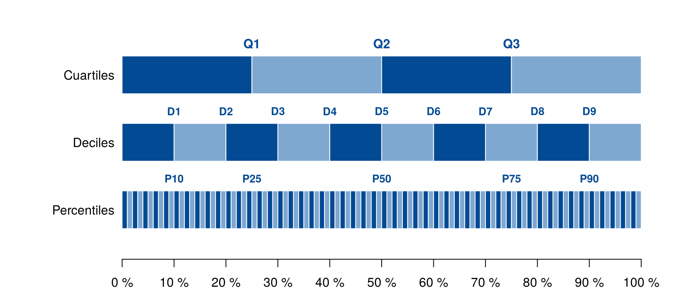
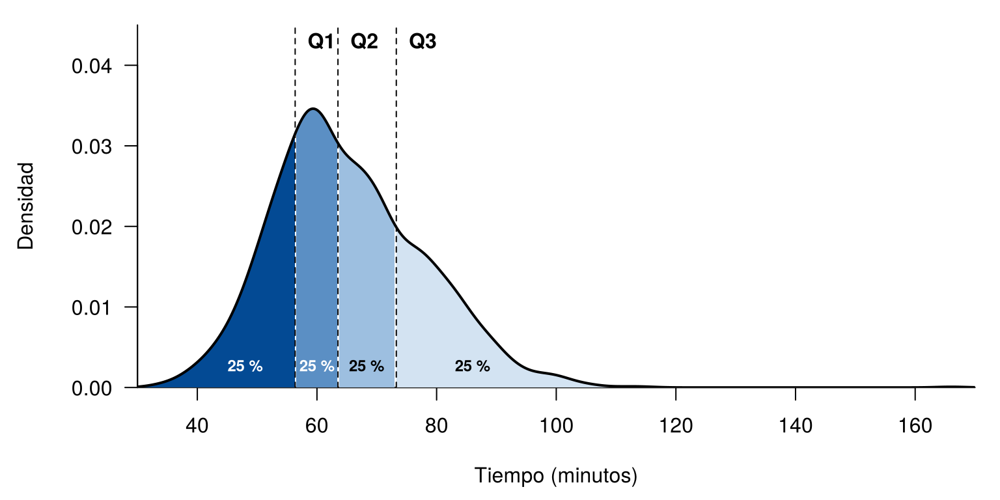
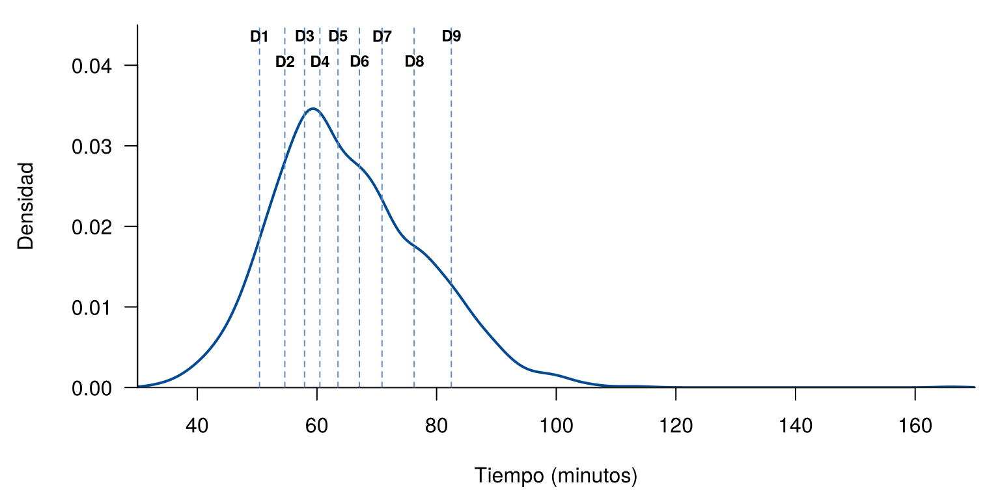
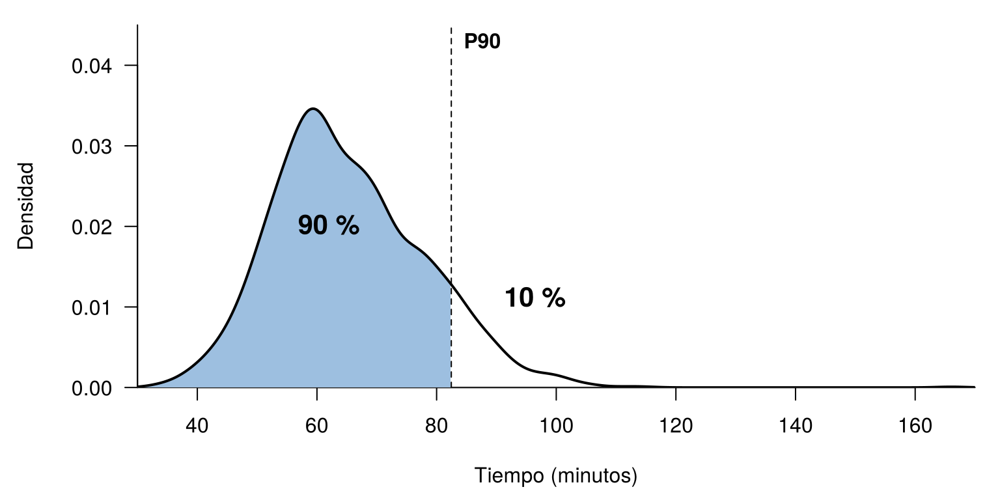
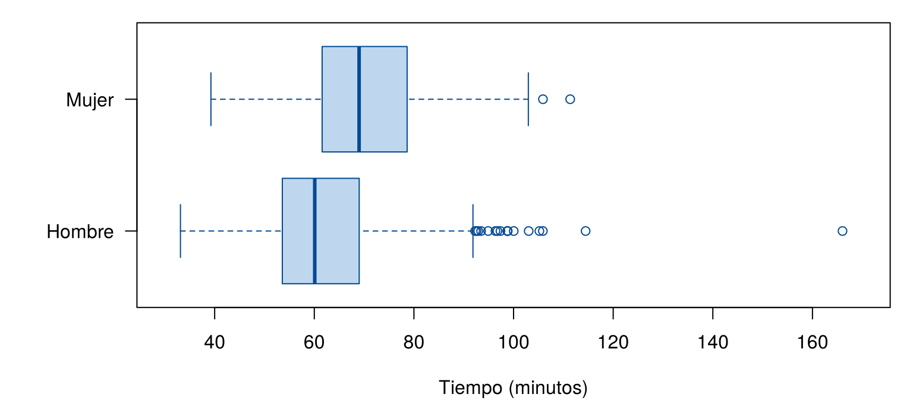

Los indicadores de posición dividen los datos ordenados en partes iguales y permiten ubicar un valor dentro de un grupo. Responden preguntas como: ¿qué valor deja por debajo al 25 % de los datos? o ¿en qué posición está este resultado frente a los demás?
Esta página usa CarreraLuz22 y
vivienda_faltantes, del paquete
paqueteMETODOS. Los bloques de código se ejecutan en orden,
porque algunos usan objetos creados en bloques anteriores.
library(paqueteMETODOS)
data("CarreraLuz22")
data("vivienda_faltantes")Un cuantil es un valor que deja por debajo una proporción determinada de los datos ordenados. Los más usados tienen nombres propios:
| Indicador | Divide los datos en | Cantidad de valores | Notación | Cada parte contiene |
|---|---|---|---|---|
| Cuartiles | 4 partes | 3 | \(Q_1, Q_2, Q_3\) | 25 % |
| Quintiles | 5 partes | 4 | \(K_1, \dots, K_4\) | 20 % |
| Deciles | 10 partes | 9 | \(D_1, \dots, D_9\) | 10 % |
| Percentiles | 100 partes | 99 | \(P_1, \dots, P_{99}\) | 1 % |
Estos indicadores están relacionados. Por ejemplo, \(P_{25} = Q_1\), \(P_{10} = D_1\) y \(P_{50} = Q_2 = D_5 = Me\). La siguiente figura muestra cómo se parten los datos:

Partición de los datos ordenados en cuartiles, deciles y percentiles.
fila <- function(y, cortes, colores) {
n <- length(cortes) - 1
rect(cortes[-(n + 1)], y - 0.28, cortes[-1], y + 0.28,
col = rep(colores, length.out = n), border = "white", lwd = 1)
}
op <- par(mar = c(3, 8, 1, 3))
plot.new()
plot.window(xlim = c(0, 100), ylim = c(0.4, 3.75), xaxs = "i")
fila(3, seq(0, 100, by = 25), c("#034A94", "#7FA8D1"))
fila(2, seq(0, 100, by = 10), c("#034A94", "#7FA8D1"))
fila(1, seq(0, 100, by = 1), c("#034A94", "#7FA8D1"))
text(c(25, 50, 75), 3.46, c("Q1", "Q2", "Q3"), font = 2, col = "#034A94")
text(seq(10, 90, by = 10), 2.46, paste0("D", 1:9), font = 2, col = "#034A94", cex = 0.85)
text(c(10, 25, 50, 75, 90), 1.46, paste0("P", c(10, 25, 50, 75, 90)),
font = 2, col = "#034A94", cex = 0.85)
axis(1, at = seq(0, 100, by = 10), labels = paste0(seq(0, 100, by = 10), " %"))
axis(2, at = 1:3, labels = c("Percentiles", "Deciles", "Cuartiles"),
las = 1, tick = FALSE, line = -0.5)
par(op)Para obtener el cuantil de orden \(p\), con \(0 < p < 1\), se ordenan los datos, \(x_{(1)} \leq x_{(2)} \leq \dots \leq x_{(n)}\), y se ubica la posición:
\[ h = (n - 1)p + 1 \]
Si \(h\) es un número entero, el cuantil es \(x_{(h)}\). Si no lo es, se interpola entre los dos datos más cercanos, donde \(\lfloor h \rfloor\) es la parte entera de \(h\):
\[ x_p = x_{(\lfloor h \rfloor)} + (h - \lfloor h \rfloor)\left(x_{(\lfloor h \rfloor + 1)} - x_{(\lfloor h \rfloor)}\right) \]
Ejemplo. Con los 7 tiempos de las mujeres juveniles, para \(Q_1\): \(h = (7 - 1)(0.25) + 1 = 2.5\). Por eso, se interpola entre el segundo y el tercer dato:
juvenil <- subset(CarreraLuz22, categoria == "1. Juvenil" & sex == "Mujer")
tiempo_juvenil <- sort(round(juvenil$timerun / 60, 2))
tiempo_juvenil[1] 50.97 60.38 61.10 81.48 83.05 88.77 91.33tiempo_juvenil[2] + 0.5 * (tiempo_juvenil[3] - tiempo_juvenil[2]) # aplicando la fórmula[1] 60.74quantile(tiempo_juvenil, 0.25) # con la función 25%
60.74 No hay una sola forma de calcular un cuantil. La función quantile()
tiene 9 métodos, descritos por Hyndman y Fan (1996), y por defecto usa
el tipo 7, que es la fórmula anterior. Con otro método, el resultado
puede cambiar un poco, sobre todo en muestras pequeñas:
quantile(tiempo_juvenil, 0.25, type = 7) 25%
60.74 quantile(tiempo_juvenil, 0.25, type = 6) 25%
60.38 Los cuartiles son 3 valores que dividen los datos en cuatro partes iguales. Cada parte contiene cerca del 25 % de los datos:
En la carrera, la figura muestra las cuatro partes de la distribución de los tiempos:
tiempo <- CarreraLuz22$timerun / 60
cuartiles <- quantile(tiempo, c(0.25, 0.50, 0.75))
curva <- density(tiempo, from = 30, to = 170)
limite_y <- 0.045
par(mar = c(4.5, 5.5, 1, 1))
zonas <- cut(curva$x, breaks = c(30, cuartiles, 170), include.lowest = TRUE)
colores <- c("#034A94", "#5B8FC4", "#9DBFE0", "#D3E3F2")
plot(curva, type = "n", main = "", las = 1, xlim = c(30, 170), ylim = c(0, limite_y),
xaxs = "i", yaxs = "i", xlab = "Tiempo (minutos)", ylab = "", bty = "l")
title(ylab = "Densidad", line = 4)
for (i in 1:4) {
zona <- as.integer(zonas) == i
polygon(c(curva$x[zona], rev(curva$x[zona])),
c(curva$y[zona], rep(0, sum(zona))), col = colores[i], border = NA)
}
lines(curva, lwd = 2)
abline(v = cuartiles, lty = 2)
text(cuartiles, limite_y * 0.95, c("Q1", "Q2", "Q3"), pos = 4, font = 2)
text(c(48, 60, 68.3, 86), limite_y * 0.06, "25 %", font = 2, cex = 0.75,
col = c("white", "white", "black", "black"))
Cuartiles de los tiempos de la carrera. Curva de densidad con las cuatro partes de los datos.
round(cuartiles, 2) 25% 50% 75%
56.35 63.51 73.26 El 25 % de los atletas tardó 56.4 minutos o menos, la mitad tardó 63.5 minutos o menos, y el 75 % tardó 73.3 minutos o menos.
Los quintiles son 4 valores que dividen los datos en cinco partes iguales. Son comunes en el estudio de los ingresos, porque permiten comparar el 20 % de menores ingresos con el 20 % de mayores ingresos.
Los deciles son 9 valores que dividen los datos en diez partes iguales. Muestran con más detalle lo que ocurre en la distribución:
deciles <- quantile(tiempo, seq(0.1, 0.9, by = 0.1))
par(mar = c(4.5, 5.5, 1, 1))
plot(curva, main = "", las = 1, lwd = 2, xlim = c(30, 170), ylim = c(0, limite_y),
xaxs = "i", yaxs = "i", xlab = "Tiempo (minutos)", ylab = "", bty = "l", col = "#034A94")
title(ylab = "Densidad", line = 4)
abline(v = deciles, lty = 2, col = "#5B8FC4")
text(deciles, limite_y * c(0.97, 0.90), paste0("D", 1:9), cex = 0.75, font = 2)
Deciles de los tiempos de la carrera. Entre dos líneas hay cerca del 10 % de los atletas.
Donde hay más atletas, las líneas están más cerca. Hacia los tiempos altos se separan, porque hay menos datos.
Los percentiles son 99 valores que dividen los datos en cien partes iguales. El percentil \(P_k\) deja por debajo cerca del \(k\) % de los datos. La figura muestra el percentil 90:
p90 <- quantile(tiempo, 0.90)
izquierda <- curva$x <= p90
par(mar = c(4.5, 5.5, 1, 1))
plot(curva, type = "n", main = "", las = 1, xlim = c(30, 170), ylim = c(0, limite_y),
xaxs = "i", yaxs = "i", xlab = "Tiempo (minutos)", ylab = "", bty = "l")
title(ylab = "Densidad", line = 4)
polygon(c(curva$x[izquierda], rev(curva$x[izquierda])),
c(curva$y[izquierda], rep(0, sum(izquierda))), col = "#9DBFE0", border = NA)
lines(curva, lwd = 2)
abline(v = p90, lty = 2)
text(p90, limite_y * 0.95, "P90", pos = 4, font = 2)
text(62, limite_y * 0.45, "90 %", font = 2, cex = 1.3)
text(p90 + 14, limite_y * 0.25, "10 %", font = 2, cex = 1.3)
Percentil 90 de los tiempos. A la izquierda queda el 90 % de los atletas.
round(p90, 2) 90%
82.46 A veces la pregunta es la contraria: ¿qué porcentaje de los datos queda por debajo de un valor? El rango percentil de un valor \(x\) es:
\[ RP(x) = \frac{\text{número de datos} \leq x}{n} \times 100 \]
Por ejemplo, para una persona que tardó 60 minutos:
100 * mean(tiempo <= 60)[1] 38.44953El 38.4 % de los atletas tardó 60 minutos o menos. En una carrera, un menor tiempo es mejor, por lo que estar en un percentil bajo es un buen resultado. Lo contrario ocurre en una prueba, donde un mayor puntaje es mejor.
La función quantile() recibe los datos y las
proporciones que se desean, en el argumento probs. Si hay
datos faltantes, hay que indicarlo con na.rm = TRUE. Por
ejemplo, la variable preciom, con los precios de las
viviendas en millones, tiene 2 datos faltantes:
precio <- vivienda_faltantes$preciom
sum(is.na(precio)) # número de datos faltantes[1] 2median(precio) # da NA porque hay datos faltantes[1] NAmedian(precio, na.rm = TRUE)[1] 330Con na.rm = TRUE se obtienen los indicadores:
quantile(precio, probs = c(0.25, 0.50, 0.75), na.rm = TRUE) # cuartiles25% 50% 75%
220 330 540 quantile(precio, probs = seq(0.2, 0.8, by = 0.2), na.rm = TRUE) # quintiles20% 40% 60% 80%
190 285 390 610 quantile(precio, probs = seq(0.1, 0.9, by = 0.1), na.rm = TRUE) # deciles10% 20% 30% 40% 50% 60% 70% 80% 90%
145 190 240 285 330 390 475 610 870 quantile(precio, probs = c(0.10, 0.25, 0.50, 0.75, 0.90), na.rm = TRUE) # percentiles10% 25% 50% 75% 90%
145 220 330 540 870 Una forma de presentar estos resultados es integrarlos en un texto:
El precio mediano de las viviendas fue de 330 millones. La mitad central de los precios estuvo entre 220 y 540 millones. El 10 % de las viviendas más económicas costó hasta 145 millones, mientras que el 10 % de las más costosas superó los 870 millones.
| Ámbito | Publicación | Indicador | Uso |
|---|---|---|---|
| Salud infantil | OMS, estándares de crecimiento | Percentiles | Tablas y gráficos de peso para la edad, por sexo y edad |
| Educación | Icfes, Saber 11 | Percentiles | Indican la posición de un puntaje frente a un grupo de referencia. Un percentil 85 significa que supera aproximadamente al 85 % de ese grupo |
| Ingresos en Colombia | DANE, pobreza monetaria 2025 | Quintiles | En 2025, el ingreso real per cápita aumentó 11.8 % en el quintil 1 y 0.5 % en el quintil 5 |
| Ingresos en Estados Unidos | U.S. Census Bureau, 2025 | Quintiles | El quintil más bajo recibió 3.0 % del ingreso total, y el más alto, 52.4 % |
| Investigación clínica | Guan et al. (2020), reseñado por Eastin y Eastin | Cuartiles | Edad mediana de 47 años, con rango intercuartílico de 35 a 58 |
| Precios de vivienda | Base vivienda_faltantes |
Deciles | \(D_1\) de 145 millones y \(D_9\) de 870 millones |
La elección depende del objetivo del análisis:
Revise qué percentiles se suelen reportar en su área. Así los resultados se pueden comparar con otros estudios. Además, no presente una lista de números sin contexto: intégrelos en un texto que explique qué significan.
El gráfico de cajas resume una variable con sus cuartiles y permite comparar grupos:
| Elemento | Qué representa |
|---|---|
| Línea central | Mediana |
| Extremos de la caja | Valores cercanos a \(Q_1\) y \(Q_3\) |
| Bigotes | Llegan hasta el dato más extremo a no más de 1.5 veces el rango intercuartílico de la caja |
| Puntos | Datos que quedan fuera de los bigotes |
par(mar = c(4.5, 6, 1, 1))
boxplot(tiempo ~ CarreraLuz22$sex, horizontal = TRUE, col = "#BFD7EE", border = "#034A94",
ylim = c(30, 170), las = 1, xlab = "", ylab = "", outcol = "#034A94")
title(xlab = "Tiempo (minutos)")
Tiempos de la carrera según el sexo.
tapply(tiempo, CarreraLuz22$sex, quantile, probs = c(0.25, 0.50, 0.75))$Hombre
25% 50% 75%
53.60833 60.09167 69.01667
$Mujer
25% 50% 75%
61.59583 68.99167 78.56667 La mediana de las mujeres es mayor que la de los hombres. Además, en los dos grupos hay tiempos altos que quedan por fuera de los bigotes.
Un método común para identificar valores atípicos usa los cuartiles y el rango intercuartílico, \(RIC = Q_3 - Q_1\). Es el criterio del gráfico de cajas, que se apoya en el trabajo de Tukey (1977):
\[ \text{Límite inferior} = Q_1 - 1.5 \times RIC \qquad \text{Límite superior} = Q_3 + 1.5 \times RIC \]
Los valores que quedan fuera de esos límites se consideran atípicos. En los precios de las viviendas:
cuartiles_precio <- quantile(precio, c(0.25, 0.75), na.rm = TRUE)
ric <- IQR(precio, na.rm = TRUE)
limite_superior <- cuartiles_precio[2] + 1.5 * ric
limite_inferior <- cuartiles_precio[1] - 1.5 * ric
c(limite_inferior, limite_superior) 25% 75%
-260 1020 sum(precio > limite_superior, na.rm = TRUE)[1] 555Hay 555 viviendas con un precio superior a 1,020 millones. Un dato atípico no siempre es un error. Antes de eliminarlo, conviene revisar por qué aparece: aquí puede tratarse de viviendas de precio alto.
| Problema | Causa | Solución |
|---|---|---|
quantile() genera un error por valores
faltantes |
La variable tiene NA |
Usar na.rm = TRUE |
median() da NA |
La variable tiene NA |
Usar na.rm = TRUE, y reportar cuántos
faltan |
| El resultado no coincide con otro programa | Se usan métodos distintos | Revisar el argumento type |
| Confundir un percentil con un porcentaje | Un percentil es un valor; el porcentaje indica cuántos datos deja por debajo | Indicar los dos: el 90 % tardó 82.5 minutos o menos |
| Decir que un percentil alto siempre es mejor | Depende de la variable | Revisar si conviene un valor alto o bajo |
| Eliminar los atípicos de forma automática | Se asume que son errores | Revisar cada caso y reportar la decisión |
Con los datos 12, 15, 18, 20, 25, 30, 41 y 50, calcule \(Q_1\) con la fórmula y compruébelo con
quantile().
\(h = (8 - 1)(0.25) + 1 = 2.75\). Se interpola entre el segundo y el tercer dato: \(15 + 0.75(18 - 15) = 17.25\).
quantile(c(12, 15, 18, 20, 25, 30, 41, 50), 0.25) 25%
17.25 Calcule los cuartiles de edad en
CarreraLuz22 y escriba una oración con el resultado.
quantile(CarreraLuz22$edad, c(0.25, 0.50, 0.75))25% 50% 75%
30 36 44 La edad mediana fue de 36 años, y la mitad central de los atletas tuvo entre 30 y 44 años.
Un atleta tardó 75 minutos en CarreraLuz22. ¿Qué
porcentaje de los atletas tardó ese tiempo o menos?
100 * mean(tiempo <= 75)[1] 77.73153Cerca del 78 % de los atletas tardó 75 minutos o menos.
Aplique la regla de 1.5 veces el rango intercuartílico a los tiempos de la carrera. ¿Cuántos atletas quedan por encima del límite superior?
Q <- quantile(tiempo, c(0.25, 0.75))
limite <- Q[2] + 1.5 * IQR(tiempo)
limite 75%
98.625 sum(tiempo > limite)[1] 22Reescriba este texto para un informe: Q1 es 56.35. Q2 es 63.51. Q3 es 73.26. Unidad: minutos.
Una redacción posible es: El tiempo mediano fue de 63.5 minutos, y la mitad central de los atletas tardó entre 56.4 y 73.3 minutos.
Última revisión: 5 de noviembre de 2026.